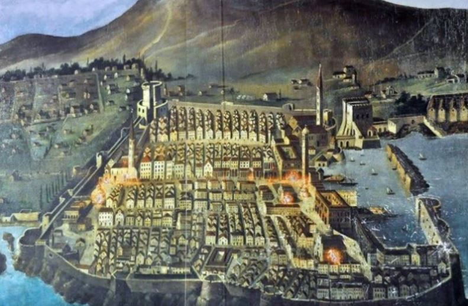

O Dubrovniku:
Dubrovnik, grad i luka na jugu Dalmacije, sjedište Dubrovačko-neretvanske županije; 28 434 st. (2011).Grad leži u
podnožju brda Srđa (412 m). More ispred Dubrovnika uglavnom je otvoreno prema pučini jer se na tom dijelu obale
otocima Lokrumom, Mrkanom i Bobarom završava istočnojadranski arhipelag. Prostrani zaljev s nekadašnjom malom lukom
Gružom iskorišten je za suvremenu luku, koja je i trajektnim linijama povezana s hrvatskim lukama (Split, Hvar i dr.)
te talijanskom lukom Barijem. Dubrovačka ACI marina nalazi se uz obalu Rijeke dubrovačke, 5 km od gradskoga središta.
Izgradnja autoceste Zagreb–Ploče 2013. poboljšala je prometnu povezanost grada s unutrašnjosti zemlje i sa Zagrebom
(planirano je produljenje autoceste do Dubrovnika). Dubrovačka zračna luka kraj Čilipa (udaljena 22 km od grada) bila
je do 1990. jedna od najprometnijih u Hrvatskoj. Tijekom Domovinskoga rata i nakon njega promet se znatno smanjio,
a od kraja 1990-ih broj putnika raste; 2013. broj putnika bio je veći od 1,5 milijuna na godinu.Najstarija gradska
jezgra nastala je na vapnenačkoj uzvisini koja je s morske strane zatvarala zaljev stare Gradske luke. Prvotna jezgra
proširena je nasipavanjem pličine koja ju je dijelila od kopna (današnja Placa ili Stradun). Dva ulaza u grad, Pile
na zapadu i Ploče na istoku, te gradske zidine (današnji oblik dobivaju u XVI. st.) određuju sliku srednjovjekovnoga
grada. Stari dio grada u obliku nepravilna peterokuta, okružen zidinama, sa središnjom širokom ulicom Placom te
uličicama, skalinadama i trgovima najvažniji je dio gradskoga prostora. Sve do pojave velikih brodova glavna
je luka Gradska luka, zaštićena lukobranom Porporelom, a nakon njihove pojave trgovački i putnički promet premješta
se u 2,5 km udaljeni Gruški zaljev, zaštićen poluotokom Lapadom. U drugoj polovici XIX. st., zapadno od staroga grada,
u Gružu, razvija se sekundarno središte Dubrovnika; postupnom izgradnjom novih stambenih četvrti između staroga
Dubrovnika i Gruža i na poluotoku Lapadu te istočno na Pločama i na nižim padinama Srđa nastaje jedinstvena gradska
cjelina koja se pruža od rta Svetoga Jakova na istoku do rta Kantafiga na ulazu u Rijeku dubrovačku na zapadu.
Zbog ograničenih mogućnosti prostornoga širenja grada u posljednjim desetljećima XX. st. nova stambena četvrt
izgrađena je na predjelu Mokošice u Rijeci dubrovačkoj.
Povijest:
Postoji nekoliko teorija o osnutku Dubrovnika (lat. Ragusa), a općeprihvaćena je, da je Grad osnovan u 7. st., kada su se Latini iz grada Epidauruma (južnije od Dubrovnika, na istom je mjestu današnji Cavtat), sklonili pred navalom Avara i Slavena na hrid Laus, što znači stijena (Laus → Lausium → Rausium → Ragusium → Ragusa).[3] Kasnije su ti isti Slaveni izgradili naselje na južnim padinama brda Srđa, na kopnu preko puta hridi i nazvali ga Dubrava, što znači šuma duba (hrasta). Tijekom vremena su se naselja sve više povezivala, da bi se potpuno spojila u 11. st., nasuvši uski kanal, što ih je dijelio (današnja ulica Placa, tj. Stradun), a u 12. st. i 13. st. zaštitivši se potpuno obrambenim zidinama. Prema nekim drugim teorijama i antičkim natpisima, Dubrovnik je možda osnovan i prije 3. st., kao malo naselje na otočiću Laus.
Danas postoje nove nedoumice u pogledu nastanka Dubrovnika, jer su se obje gore spomenute teorije pokazale pogrešnima. Prilikom renoviranja Katedrale, duboko ispod temelja današnjeg zdanja nađeni su ostatci dvije nekadašnje crkve, jedne za koju se i prije znalo, i druge, još starije, datirane u 5. stoljeće. Kao dodatak promjeni teorije je i otkriće dijela dubrovačkih zidina, također datiran u isto razdoblje. Prilikom sondiranja Straduna, utvrđena je činjenica, da otočić Laus nikada nije postojao, jer sam Stradun nije nasip nego prirodna pješčana plaža, koja se prostirala između brda Srđa i hridinastog područja (rečeni Laus). Nove spoznaje, kao i otkriće grčkih novčića i keramike pod Malim mulom u luci, čini se, potvrđuju teze nekih povjesničara, da početci sežu davno prije 7. st., tj. u doba starih Grka. Postavka dr. Ničetića, kojom on dokazuje neminovnost postojanja jedne antičke luke između Budve i Korčule dodatno je dala na vjerodostojnosti teze o nastanku naselja još u grčko vrijeme.
Dubrovnik je u početku bio u sastavu Dalmatinskog temata i priznaje vlast Bizanta. Prvi se puta u ispravama spominje 850. g. Nikola Zvonimir Bjelovučić pisao je o Crvenoj Hrvatskoj i Dubrovniku 1929. godine. U radu je objavio poglavlje o staroj kraljevskoj crkvi sv. Stjepana iz polovice 10. st., hrv. kralju Stjepanu Miroslavu i njegovoj supruzi kraljici Margariti u Dubrovniku 948. godine, njihovoj zadužbini, kraljevo darivanje Župe do Orašca, grobu kraljice Margarite u Dubrovniku gdje je živjela kao duvna i komadu sv. Križa koji je kraljica Margarita darovala te o starohrvatskim crkvama na području Dubrovnika.[4]
Oko 992. g. spalio ga je car Samuilo. Krajem 10. st. osniva se dubrovačka nadbiskupija i metropolija. Tada postaje crkveno neovisan od Splita. Od 1205. g. Mletačka Republika, koristeći križarski pohod, vlada Dubrovnikom, što traje do 1358. g. U vrijeme mletačke vlasti, Dubrovčani dižu tri bune, ali se nisu mogli osloboditi mletačkog gospodstva.
Iako je priznavao mletačku vlast, Dubrovnik je uspio sačuvati autonomiju, jer je birao Malo i Veliko vijeće, Senat te ostale organe gradske samouprave. Komuna je 1272. g. dobila statut. U Dubrovniku se vrlo rano razvija trgovina, posebno sa zaleđem i to ponajprije s Bosnom u doba Kulina bana.
Stanovništvo se dijeli na bogatu vlastelu: patricije (nobiles cives), gradski puk - pučane, obično na poslovima trgovaca i kapetana, kao i pisara, i kmetove, seljake koji rade za vlastelu - obrađuju zemlju. Patriciji se pokušavaju zatvoriti unutar sebe, no posljedica toga je odumiranje vlastelinskih porodica. Morali su popustiti te sklapati brakove s pučanstvom.
U vrijeme uspona Raške uspješno se branio od njenih napadaja. U 13. st. vlast Dubrovnika raste na šire gradsko područje i susjedne teritorije. Tako se Lastovo dobrovoljno priključuje Dubrovniku, a od 1333. g. u sastavu Dubrovačke Republike je i Stonski rat, tj. Pelješac sa Stonom. Srpski Car Dušan prepustio je Dubrovniku kontrolu nad Stonskim ratom (Pelješcem) uz naknadu od 500 perpera, plaćanje poreza. Godine 1345. i Mljet ulazi u sastav Republike.
Ston je imao veliko strateško značenje za Dubrovnik, jer je tako mogao kontrolirati plovidbu oko ušća Neretve i u Mljetskom kanalu. Prostor od Stona do Zatona Dubrovnik je osigurao kada je početkom 14. st. od Bosne kupio Primorje i početkom 15. st. Konavle (primorski dio 1333., a konavoski dio s tvrđavom Soko te Cavtatom i Obodom 31. prosinca 1426.). Tada su utvrđene granice Republike koju od kraja 15. st. priznaju svi dubrovački susjedi.
Dubrovnik je potpisao brojne međunarodne ugovore s talijanskim gradovima (posebno s Pisom) i ostalim susjedima u zaleđu (Bosna, Srbija), većinom osiguravajući prevlast i povlašten položaj dubrovačkih trgovaca.
Zadarskim mirom 1358. g., Mletačka Republika se odrekla svih posjeda na istočnoj obali Jadrana u korist Hrvatsko-Ugarske Kraljevine. Dubrovnik je, u uspješnom diplomatskom potezu, prihvatio simboličnu vrhovnu vlast kralja (Ludovika I.), koja nije Hrvatsko-Ugarskoj davala doslovno nikakav utjecaj nad komunom i plaćao im je danak od 500 dukata, čime se zaštitio i od nasrtaja Venecije.
Od tog vremena Dubrovnik sve više izgrađuje svoju samostalnost i neovisnost. Kneza biraju sami Dubrovčani, a nakon smrti Ludovika I. 1380. g. razvija se u samostalnu i priznatu Republiku.
